← Film
05 / 07
Toronto, 4 A.M.
One night, one roll of black-and-white: patios still full, food trucks still open, then the city thinning out to a lit streetcar and an empty street.
-

01 / 12 -
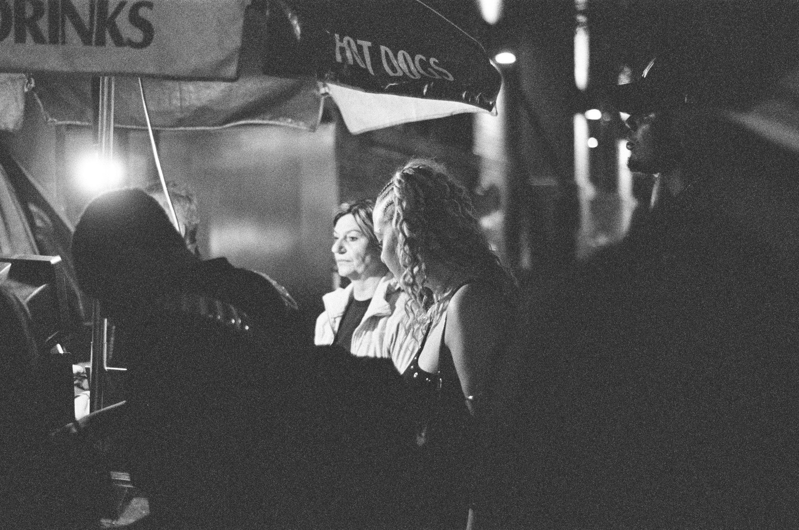
02 / 12 -
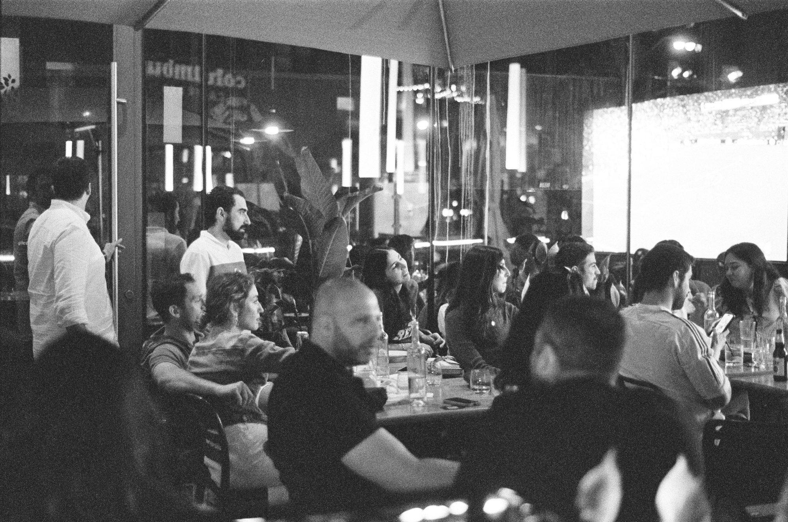
03 / 12 -
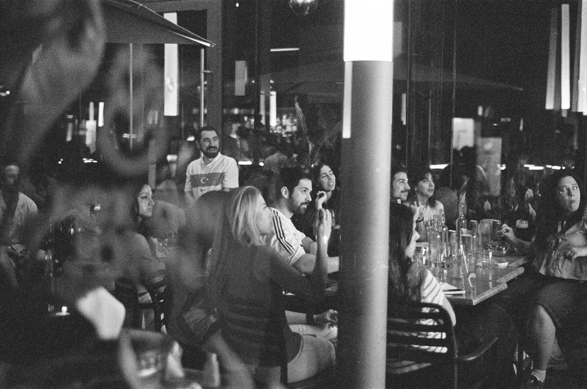
04 / 12 -
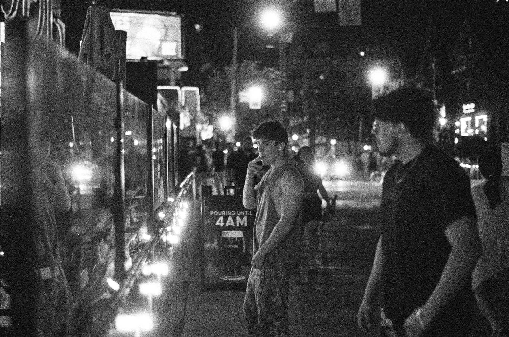
05 / 12 -
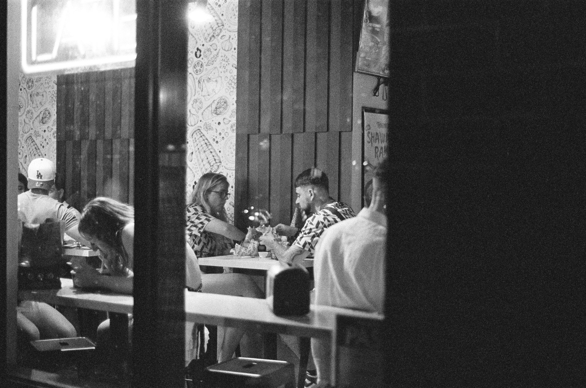
06 / 12 -
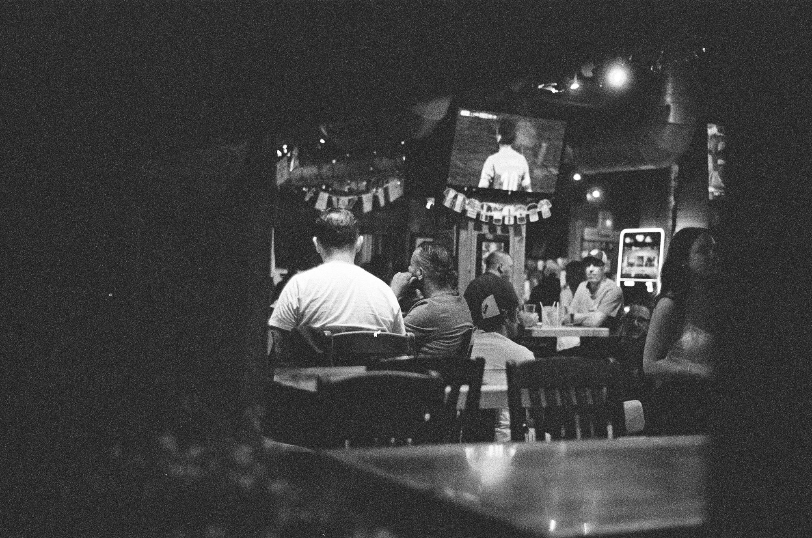
07 / 12 -
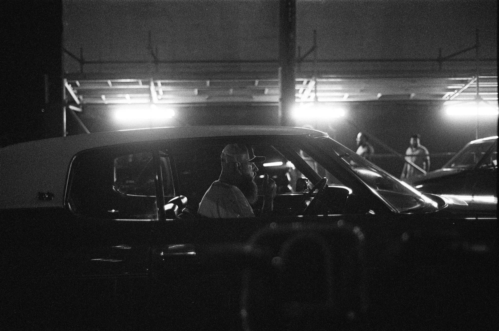
08 / 12 -
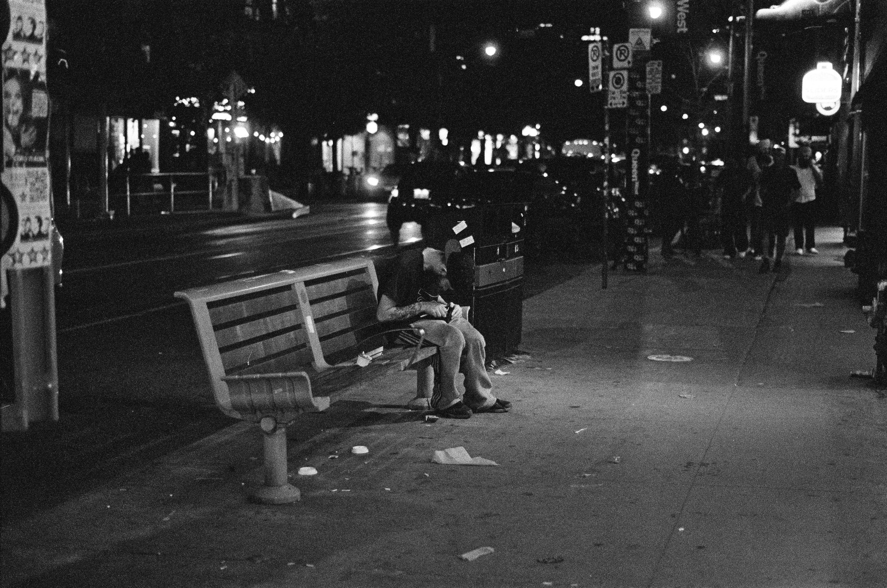
09 / 12 -
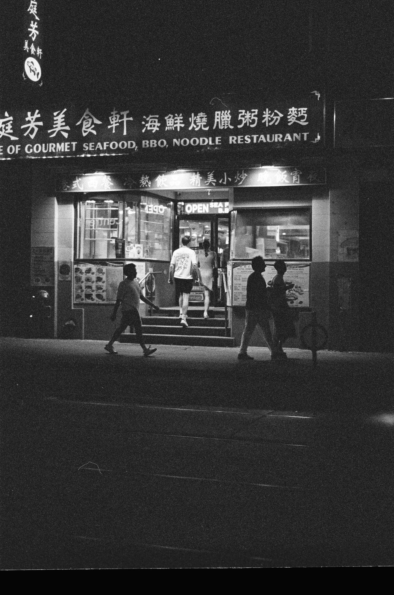
10 / 12 -
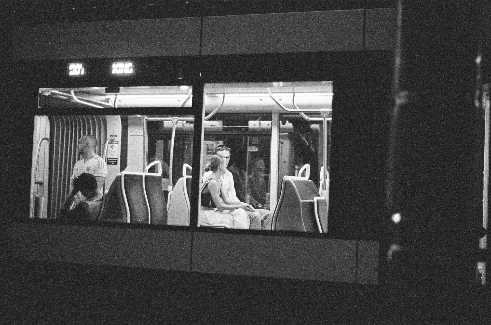
11 / 12 -
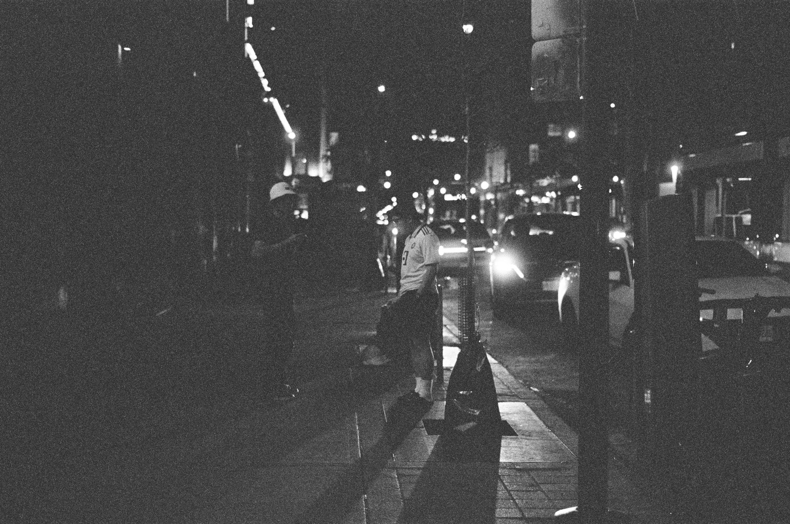
12 / 12